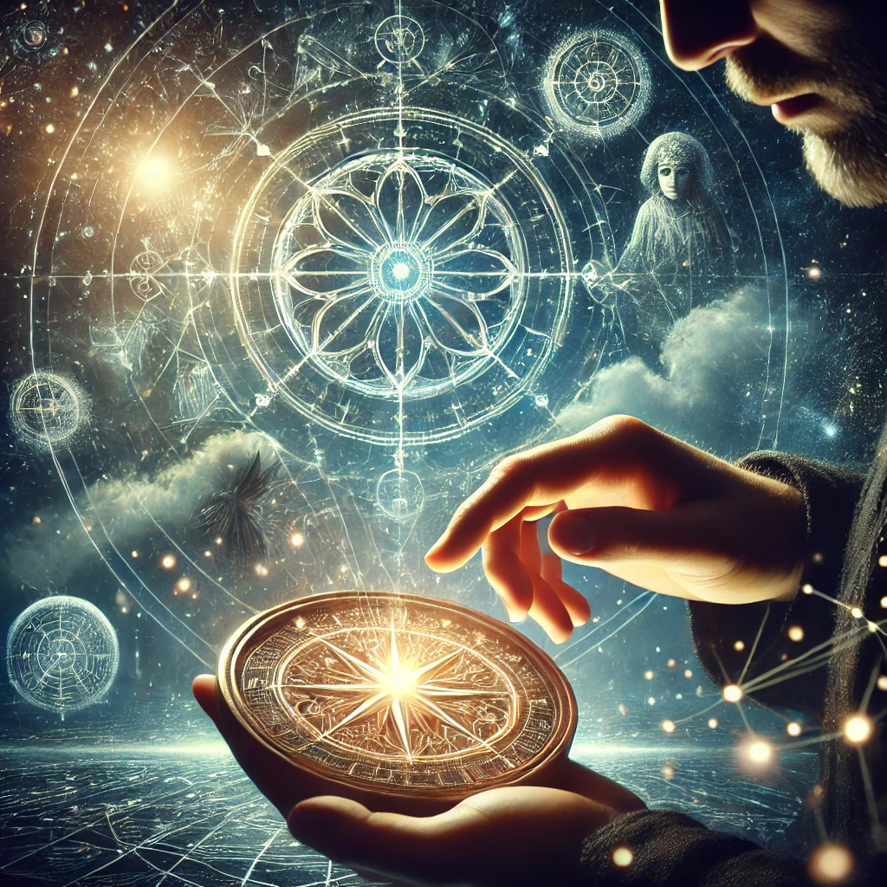

The glyphs etched into the compass seem to glow brighter as you focus your energy on them. Each symbol pulses with a rhythm that feels ancient yet familiar, resonating with your very core. You trace their lines with your fingers, feeling their hidden power and meaning.
As you concentrate, the compass begins to emit a faint hum, and visions flood your mind. You see fragmented images of distant realms, forgotten knowledge, and truths that seem just beyond your grasp. A voice emerges, soft yet commanding:
“The secrets you seek are not in the glyphs alone, but in how they connect to your essence. To understand them is to understand yourself.”
The glyphs shift subtly, as if inviting you to unlock their mysteries. The choice of how to proceed lies before you.

What will you focus on?